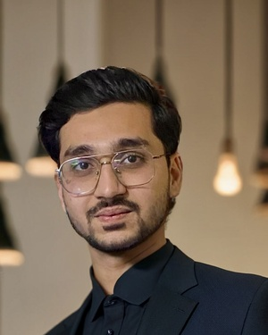

Building systems that |.
I work at the intersection of NLP, generative models, and multi-agent orchestration — turning research ideas into production AI systems, from diffusion-based generation to autonomous agent pipelines.

A researcher's curiosity, an engineer's follow-through.
I'm an AI Engineer currently pursuing an M.S. in Data Science and Artificial Intelligence at FH Joanneum in Graz, Austria, following a B.S. in Artificial Intelligence from PAF-IAST, Pakistan. My work spans natural language processing, generative models, and the design of autonomous, multi-agent systems that automate real workflows rather than sit in a notebook.
I've built production systems across three countries and as many industries — from a customer-service chatbot at Colgate-Palmolive, to an Urdu agricultural advisory chatbot and RVC-based voice cloning system at Sybrid, to the multi-agent orchestration platform I currently architect at a TU Graz Science Park startup. My research on graph-conditioned diffusion for floorplan generation was published at IEEE IVCNZ 2025.
Four areas, one throughline
NLP & LLMs
Text analysis, sentiment and topic modeling, and chatbot systems built for real users — from farmers to enterprise customers.
Generative Models
Hands-on work with GANs, diffusion models, VAEs, and autoregressive architectures — including a peer-reviewed publication.
Agentic Systems
Multi-agent orchestration, tool use, and workflow automation that turns business requirements into autonomous execution pipelines.
Applied ML/DL
CNNs, RNNs, GNNs, and classical ML deployed on real constraints — from biometric recognition to medical forecasting.
Where I've built
AI Engineer
Architecting and deploying intelligent AI agent systems to automate end-to-end workflow orchestration, turning business requirements into autonomous, scalable execution pipelines.
GenAI Intern
Built an Urdu agricultural chatbot delivering tailored guidance on crops, fertilizers, and weather. Developed a voice cloning and translation system using RVC V2 for multilingual, accessible communication.
AI Intern
Built a customer-service chatbot, an automatic product-sorting conveyor system, empty tube detection for the paste filler line, and advanced colour analysis for LABSA.
A few things I've built
2D Floorplan Generation via Diffusion
Final Year Project with Brightware, Saudi Arabia. Combines Text-to-Graph, DDPM, and U-Net to generate detailed floor plans from text descriptions. Published at IEEE IVCNZ 2025.
Vocal Clone Translator
Real-time speech translation using RVC V2 that preserves the speaker's voice, tone, accent, and emotion — built for multilingual communication and content localization.
Agricultural Chatbot
AI/NLP chatbot delivering real-time advice on crop cultivation, pest control, weather forecasts, and market prices, with 24/7 availability for farmers.
Deep Fake Detection
Transformer models trained on genuine and synthetic media to detect subtle artifacts, supporting digital media authenticity.